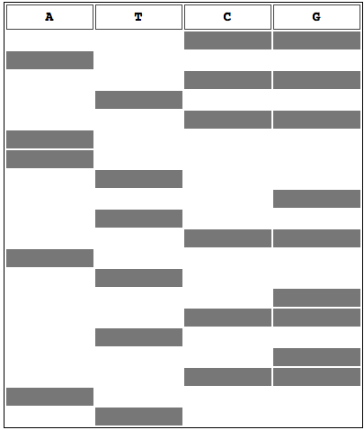

All of the following are disadvantages of the Sanger method except:
Why must DNA be amplified prior to sequencing?
Given a template strand: 5' AGTATAGTGTTAGGTGTCATAGTACAAGG 3', which of the following could be used as a DNA primer?
If we have 2 dATPs, 1 dCTP, 1 ddCTP, and 2 ddGTPs in one reaction tube, which of the following strands could be produced from a sample containing the following template strand: 5' GCTTGGCTTAACCAGATATTCCACTG 3' with the following primer: 5' CAGTGGAATATCTGGTT 3'?
In gel electrophoresis, DNA migrates to the _______ end, which is the ________.
Based on this figure, the most likely error is: 
Based on this figure, which lane contains the shortest DNA strand? (assume the anode is at the bottom)
Based on this figure, we can deduce what DNA sequence? (assume the anode is at the bottom)
If you wish to sequence a long strand of DNA in one round of reactions, you should: